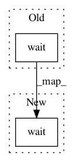

1ec0207376e3dcece97812f8ae40bc8d7ec9b208,stimulus_presentation/generate_spatial_gratings.py,,,#,25
Before Change
// inter-trial interval
w = trials["Duration"].iloc[ii] + trials["Interval"].iloc[ii]
core.wait(w)
// Cleanup
mywin.close()
After Change
mywin.flip()
// offset
core.wait(soa)
fixation.draw()
outlet.push_sample([fre + 3, contrast, ori], local_clock())
mywin.flip()
In pattern: SUPERPATTERN
Frequency: 3
Non-data size: 2
Instances
Project Name: alexandrebarachant/muse-lsl
Commit Name: 1ec0207376e3dcece97812f8ae40bc8d7ec9b208
Time: 2017-11-10
Author: hubert@interaxon.ca
File Name: stimulus_presentation/generate_spatial_gratings.py
Class Name:
Method Name:
Project Name: pyinstaller/pyinstaller
Commit Name: 5037add8e600d3a84f63e87393d793818dbfaa46
Time: 2017-07-24
Author: dustin@virtualroadside.com
File Name: PyInstaller/utils/hooks/gi.py
Class Name:
Method Name: gir_library_path_fix
Project Name: cesium-ml/cesium
Commit Name: 9ca3f533cb6d467a1ebffda880137d3cc0ef9561
Time: 2015-05-13
Author: a.crellinquick@gmail.com
File Name: mltsp/custom_feature_tools.py
Class Name:
Method Name: extract_feats_in_docker_container